Zde naleznete souhrn nejpodstatnějších informací a úkonů, které by jste mohli chtít provádět. Pár poznámek na začátek. Některé části rozhranní jsou skryté a ukáží se až po najetí kurzorem na danou oblast. V závislosti na složitosti požadované vizualizaci (počtu časových os) je možné, že bude chvíli trvat, než se zobrazí výsledek. Na pozadí pracují neplacení nemrtví, kteří se snaží rozklíčovat jak nejlépe poskládat dané osy, aby byly co nejpřehlednější, ale no, jsou to nemrtví, co dodat. Následuje seznam zkratek, které mohou velmi urychlit práci s vizualizací. Často se bude zmiňovat výběr, ten je realizován obrázkem pod některou z popisných částí os. Výběr je možné realizovat kliknutím nebo použitím šipek. Pokud není nic vybráno šipkami je možné rychle zvolit poslední nebo první osu. Kromě klávesnice je možné interagovat přímo s plátnem vizualizace. Pomocí chycení je možné posouvat celou vizualizaci nahoru, dolů, vlevo a vpravo. Pokud nevidíte všechny přidané osy, pak jednoduše chyťte zobrazovací oblast a posuňte příslušným směrem. Kromě chycení také funguje kolečko myši, které umožňuje přiblížení nebo oddálení časových os.
Každá osa zobrazuje události označené štítkem neboli tagem. Tag reprezentuje objekt, kterého se týkají nějaké události, například nějakou osobu, nebo místo apod.
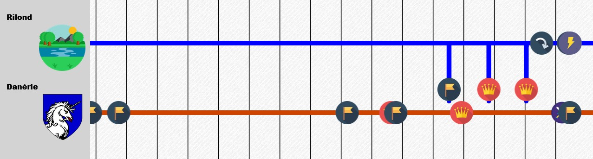Na obrázku můžete vidět dvě časové osy. Ta první zobrazuje události označené tagem "Danérie" a ta druhá tagem "Rilond".
Přidání tagů je možné provést s pomocí příslušného tlačítka v levém dolním rohu. Toto tlačítko zobrazí nabídku, kterou je možné vidět na obrázku. V té je pak možné si vybrat, co přesně se má přidat do aktuální vizualizace. Do textového pole stačí začít psát a vybrat si hledaný termín.
Okno pro přidání je možné také vyvolat s pomocí klávesové zkratky CTRL + a.
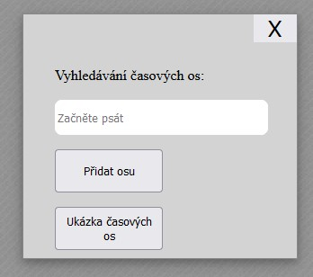Odebrání funguje jednodušeji. Buď je osu možné odstranit pomocí malého křížku u každé osy. V případě potřeby odstranění všech os, je možné využít příslušné tlačítko.
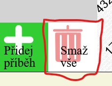 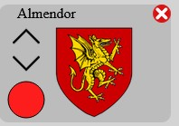Pro změnu zobrazeného časového období lze použít posuvník v horní částky obrazovky. Pro posunutí časového období "vezměte" za světlemodrý střed posuvníku a tahem posuňte. Pokud chcete změnit délku zobrazeného období, vezměte za jeden z šedých konců posuvníku a tahem změníte jeho délku. V tomto posuvníku je také zobrazen náhled všech událostí pomocí barevných puntíků. Po stranách lišty posuvníku naleznete minimální a maximální datum, které lze na časových osách zobrazit.
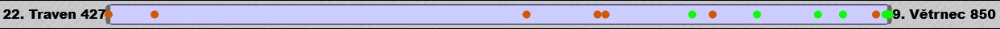Dalším ovládacím prvkem zobrazování časových období je myš. Je možné s pomocí kolečka měnit rozlišení přímo na ploše s osami. Taktéž je možné posouvat celou vizualizaci přímo u os.
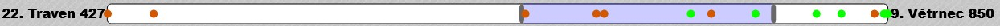Pořadí os je možné změnit několika způsoby. Prvním je klikání na šipku, která se zobrazí po najetí na přísný symbol. Druhou možností je pak vybrat daný symbol myší a pomocí klávesových zkratek SHIFT + šipka nahoru/dolů je možné posouvat vybranou osu v seznamu. Pro výběr je možné kliknout myší přímo na danou osu nebo pomocí šipeky nahoru nebo šipky dolu vybrat příslušnou osu
Pokud si přejete změnit barvu u určité osy, pak stačí kliknout na kolečko v levém dolním rohu reprezentace osy a vybrat si novou barvu. Tu je nutné následně potvrdit.
Následuje ukázka toho, jak je možné vizualizaci ovládat pomocí klávesnice. V této části uvidíte jak reagují jednotlivé klávesové zkratky a případně vysvětlení jejich chování.
Na začátku je celá vizualizace prázdná tak jak je vidět na obrázku vlevo. Kontextové okno s možnostmi je možné otevřít s pomocí klávesové zkratky CTRL + a. Zde si vyberte kterou osu budete chtít zobrazit. Obrázek uprostřed reprezentuje přesně toto okno a tuto možnost. Poslední obrázek pak ukazuje zobrazenou linku. Kontextové okno je možné zavřít s pomocí klávesy esc nebo s pomocí křížku v okně na pravé straně.
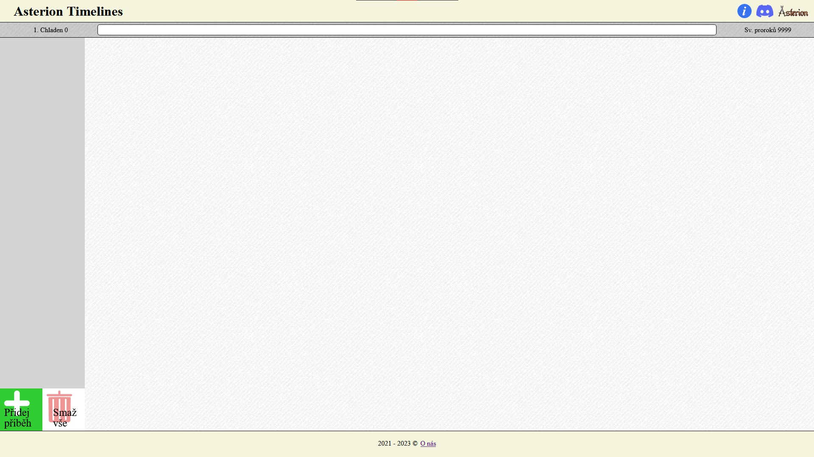 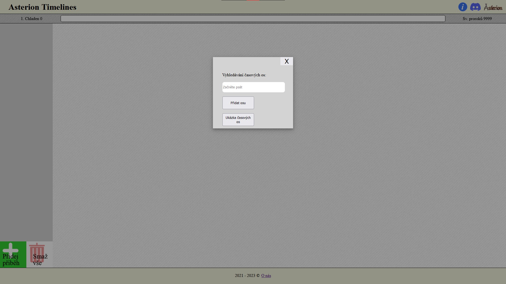 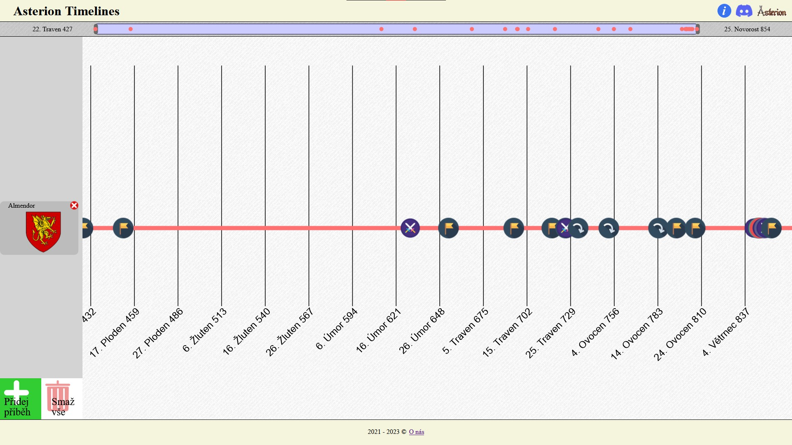Výběr je možné realizovat pomocí kliknutí myši na příslušný obrázek u časové osy. Pokud si chcete hrát s klávesami, pak existují dvě možnosti. Šipka nahoru umožňuje posouvat výběr směrem nahoru. Šipka dolů dělá to stejné, jen směrem dolů. U jedné osy se vždy vybere příslušná osa, jak je vidět na následujícím obrázku. Zrušení výběru je možné provést opět pomocí klávesy esc.
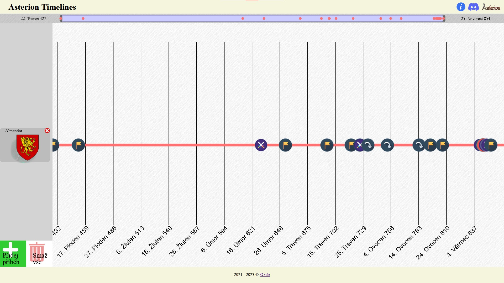Pokud je ve vizualizaci více os tak jako na obrázku vlevo, pak stisknutím šipky nahoru se vybere poslední a analogicky k tomu s pomocí šipky dolů první. Další mačkání šipek pak posouvá výběr níže nebo výše.
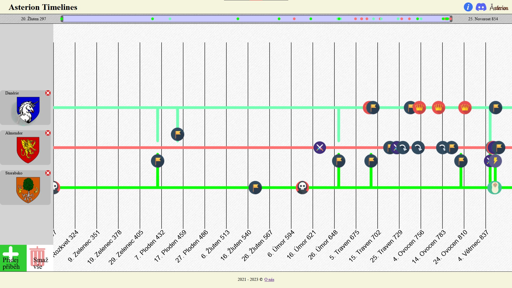V případě, že chcete prohodit osy, pak máte dvě možnosti. U osy jsou schovány šipky na které je možné klikat, nebo vyberete osu kterou chcete posunout, ať už šipkami nebo kliknutím. Následně s pomocí klávesové zkratky SHIFT + šipka nahoru nebo SHIFT + šipka dolů můžete posunout vybranou osu směrem nahoru nebo dolů, jak je vidět na následujících obrázcích.
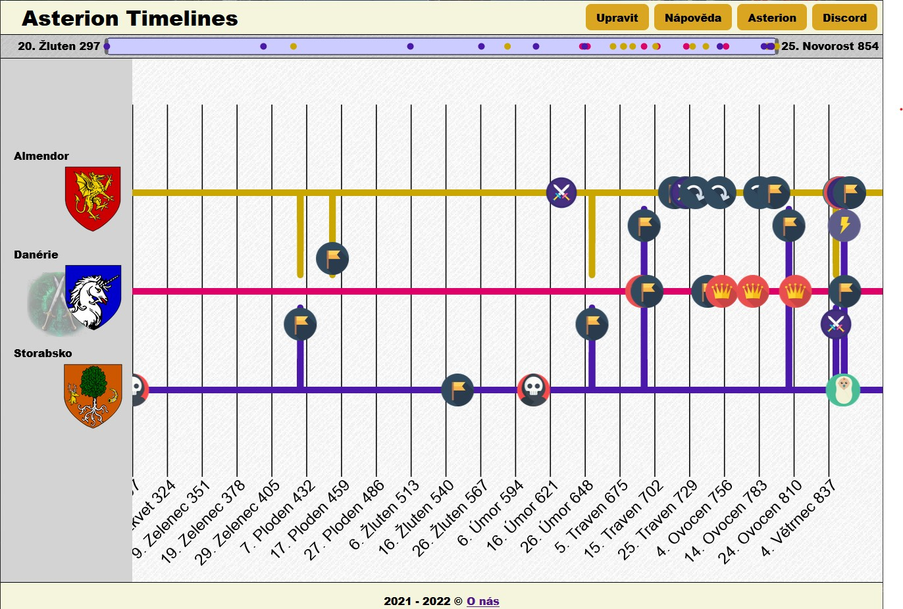